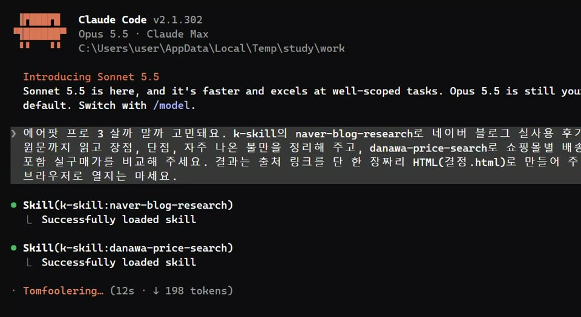

한국 서비스용 클로드 스킬 131개 묶음 'k-skill'을 Claude Code에 깔면, '살까 말까' 한마디에 네이버 블로그 실사용 후기를 원문까지 읽고 장단점·자주 나온 불만을 정리하고, 다나와 쇼핑몰별 배송비 포함 실구매가까지 비교해서 출처 달린 한 장으로 만들어 줘요.
Claude Code를 켜고 아래 '설치' 두 줄을 차례로 입력하세요. 131개가 한 번에 깔리고, /k-skill:스킬이름 으로 불러 써요. 다나와 스킬을 쓰려면 명령 프롬프트에 'pip install beautifulsoup4'도 한 번 넣어 주세요.
아래 '살까 말까' 문장에서 제품 이름만 바꿔 넣으세요. 클로드가 네이버 블로그 후기를 찾아 원문까지 읽고, 다나와에서 쇼핑몰별 가격을 가져와요. 저희는 5분쯤 걸렸어요.

결과는 결정.html 한 장으로 와요. 결론, 장점·단점, 자주 나온 불만 TOP 3, 나에게 맞는 경우, 쇼핑몰별 실구매가 표, 읽은 후기 링크까지 들어 있어요. 파일을 더블클릭하면 브라우저로 열려요.
Claude Code 안에서
/plugin marketplace add NomaDamas/k-skill
Claude Code 안에서
/plugin install k-skill@k-skill
제품 이름만 바꾸기
(제품 이름) 살까 말까 고민돼요. k-skill의 naver-blog-research로 네이버 블로그 실사용 후기 5개를 원문까지 읽고 장점, 단점, 자주 나온 불만을 정리해 주고, danawa-price-search로 쇼핑몰별 배송비 포함 실구매가를 비교해 주세요. 결과는 출처 링크를 단 한 장짜리 HTML(결정.html)로 만들어 주세요.
후기가 광고 같을 때 덧붙이기
쇼핑 링크나 협찬 표시가 있는 후기는 따로 표시하고, 장점 쪽으로 기울었을 수 있다고 적어 주세요. 단점은 사소한 것까지 모두 모아 주세요.
131개 중 뭐가 있는지
k-skill에 어떤 스킬이 있는지 분야별로 정리해 주세요. 키가 필요 없는 것과 필요한 것을 나눠 주세요.
도움이 되셨다면
@ai.antenna.kr
에서 바로 쓰는 AI 활용법을 계속 올립니다.